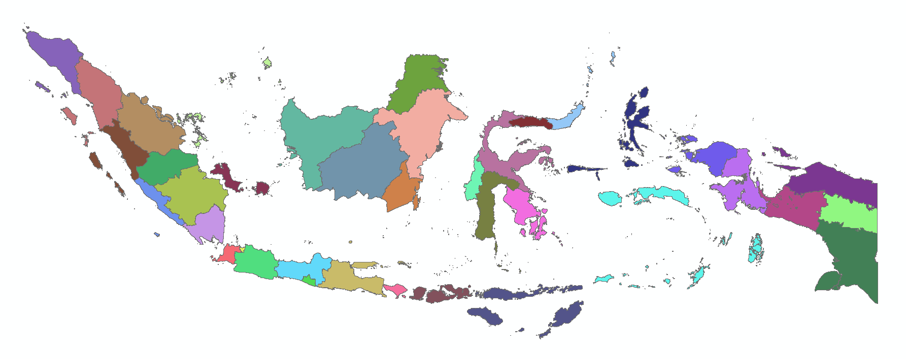
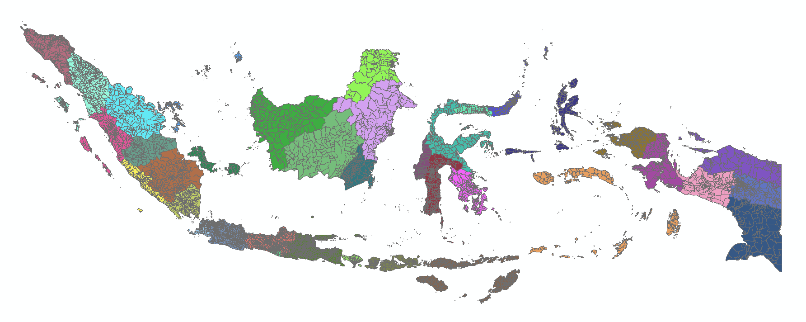
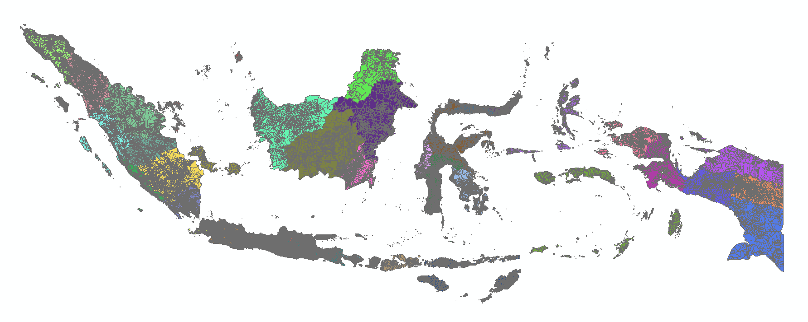

Spesifikasi & Pratinjau

Administrasi Provinsi

Administrasi Kabupaten

Administrasi Kecamatan

Administrasi Desa
Free Dataset
Unduh Data Provinsi (.shp)
Unduh Data Kabupaten (.shp)
Unduh Data Kecamatan (.shp)
Unduh Data Desa (.shp)
Update: Jan 2024 • Format: Shapefile